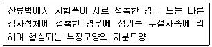

자기비파괴검사기사 (2015-08-16 기출문제)
1과목: 비파괴검사 개론
1. 강제 대형 압력용기에 부착된 노즐의 표면 결함을 검출 하기 가장 적합한 비파괴검사법은?
- 누설검사
- 자분탐상검사
- 방사선투과시험
- 초음파탐상검사
(정답률: 85%)

2. 다음 중 LASER(레이져)가 이용되는 검사법은?
- Holography
- Thermography
- Xeroradiography
- Auto radiography
(정답률: 58%)
3. 시험체의 양쪽에 접근이 가능해야 적용할 수 있는 비파괴 시험법은?
- 방사선투과시험
- 초음파탐상시험
- 자분탐상시험
- 와전류탐상시험
(정답률: 70%)
4. 침투탐상시험에 있어서 탐상제의 점성(Viscosity)에 대한 설명으로 옳은 것은?
- 침투제의 세척성 정도의 영향
- 오염물질의 수용성 여부의 영향
- 발산되는 형광 성능 비교의 영향
- 침투제가 결함속으로 침투하는 속도 관계의 영향
(정답률: 80%)
5. 와전류탐상시험시 시험의 가장 큰 문제점에 해당하는 것은?
- 미소한 결함을 탐상할 수 없다.
- 정확한 전기 전도도를 측정할 수 없다.
- 미지변수에 의한 다양한 출력 지시치가 나타난다.
- 검사 누락부위를 방지하기 위하여 검사를 저속도로 해야 한다.
(정답률: 49%)
6. 금속분말을 압축성형하고 소결하여 부품을 만드는 분말야금법의 특징으로 옳은 것은?
- 제조과정 중 절삭가공을 생략할 수 없다.
- 다공질의 금속재료를 만들기에 적합하지 않다.
- 제조과정에서 융점 이상으로 온도를 올려야 한다.
- 용해-주조공법으로 만들기 어려운 합금을 만들 수 있다.
(정답률: 72%)
7. 베어링용 합금이 갖추어야 할 조건이 아닌 것은?
- 소착성이 클 것
- 마찰계수가 적을 것
- 충분한 점성을 가질 것
- 하중에 견딜 수 있는 정도의 경도와 내압력을 가질 것
(정답률: 34%)
8. 특수강에서 담금질성 향성이 가장 큰 것으로 탈황에도 효과적인 첨가원소는?
- C
- Mn
- Si
- Cu
(정답률: 60%)
9. 조직검사에서 조직의 양을 측정하는 방법이 아닌 것은?
- 면적 측정법
- 직선 측정법
- 점의 측정법
- 직각의 측정법
(정답률: 43%)
10. 경도 시험의 종류 중 대면각이 136˚ 이고 다이아몬드 재료의 피라미드 형상 압일자를 사용하여 경도를 나타내는 시험 방법은?
- 쇼어 경도시험
- 비커스 경도시험
- 로크웰 경도시험
- 브리넬 경도시험
(정답률: 57%)
11. 열간금형용 합금공구강에 대한 설명으로 틀린 것은?
- 내마모성이 크고 용착, 소착을 일으키지 않아야 한다.
- Heat checking은 C%가 높으면 잘 일어나지 않는다.
- Mo기 공구강은 담금질성 및 인성이 좋으나 탈탄을 일으키기 쉽다.
- 550℃ 부근에서 뜨임하면 프레스현강 등은 2차경화가 나타난다.
(정답률: 50%)
12. 가공용 Al합금은 냉간가공이나 열처리에 따라 기계적 성질이 달라지는데 질별 기호중 ‘제조한 그대로의 것’에 표시하는 기호는?
- F
- O
- H
- W
(정답률: 58%)
13. 순철의 변태점에 관한 설명으로틀린 것은?
- A3에서 일어난다.
- 자기변태점은 약 768℃에서 일어난다.
- 순철의 변태점은 가열 및 냉각속도와 무관하다.
- A3변태는 가열에 의해 BCC 격자가 FCC 격자로 변한다.
(정답률: 80%)
14. Al-Si 합금인 실루민(silumin)에 대한 설명 중 틀린 것은?
- 금속나트륨 등으로 개량처리 한다.
- Al과 Si의 합금은 공정반응을 갖는다.
- 다이캐스팅 할 때는 용탕이 서냉되어 조대화 조직이 된다.
- 유동성이 좋으므로 엷고 복잡한 사형주물에 이용된다.
(정답률: 77%)
15. 0.3% 탄소강이 공석 변태 후 펄라이트(pearlite)중의 페라이트(ferrite)양은 약 몇 %인가? (단, α의 고용량은 0.025, 공석점은 0.80이다.)
- 15.5
- 25.7
- 31.3
- 45.5
(정답률: 70%)
16. 다음 용접 법 중 압접의 종류가 아닌 것은?
- 테르밋 용접
- 단접
- 초음파 용접
- 마찰 용접
(정답률: 36%)
17. 용접시 발생하는 잔류응력이 구조물에 미치는 영향이 아닌 것은?
- 취성파괴
- 피로강도
- 부식
- 재결정 온도
(정답률: 37%)
18. 용접기의 아크 발생 시간이 7분, 아크 발생 정지 시간이 3분일 경우 용접기의 사용률은?
- 100%
- 70%
- 50%
- 30%
(정답률: 87%)
19. 스터드 용접(stud welding)에서 페롤(ferrule)의 역할로 틀린 것은?
- 용접이 진행되는 동안 아크열을 집중시켜 준다.
- 용융급속의 산화를 촉진시켜 준다.
- 용융금속의 유출을 막아 준다.
- 용접사의 눈을 아크광선으로부터 보호해 준다.
(정답률: 60%)
20. 다음 중 노치취성 시험방법이 아닌 것은?
- 슈나트(schnadt)시험
- 카안인열(kahn tear)시험
- 코머렐(kommerell)시험
- 샤르피(charpy)시험
(정답률: 54%)
2과목: 자기탐상검사 원리
21. 의사지시모양(의사모양)에 대한 설명으로 옳은 것은?
- 언더컷 등의 표면 결함
- 균열 이외의 미세한 결함 자분모양
- 내부 선형결함에 의한 희미한 자분지시모양
- 결함 이외의 원인으로 나타나는 자분지시모양
(정답률: 80%)
22. 자화전류 중 표피효과로 인하여 자속이 표면에만 집중되어 표면검사에 국한되는 전류는?
- 직류
- 교류
- 맥류
- 충격전류
(정답률: 72%)
23. 자음 중 자화고무법(Magnetic Rubber Test)의 장점을 설명한 것으로 틀린 것은?
- 검사에 소요되는 시간이 짧다.
- 코팅된 시험체도 검사가 가능하다.
- 육안관찰이 어려운 부분의 검사가 가능하다.
- 피로균열의 발생과 성장과정의 관찰이 가능하다.
(정답률: 37%)
24. 물질의 전류자계를 0(Zero)로 하기 위하여 잔류자기를 제거하는데 필요한 역자화력을 무엇이라 하는가?
- 보자력
- 자화력
- 투자율
- 자속밀도
(정답률: 64%)
25. 자분탐상시험의 건식법과 습식법의 장ㆍ단점을 설명한 것으로 틀린 것은?
- 건식법은 습식법보다 높은 온도에서 시험할 수 있다.
- 습식법은 건식법보다 미세결함의 검출이 용이하다.
- 건식법은 습식법보다 복잡한 형상의 시험체에 적합하다.
- 습식법은 건식법보다 표면이 거친 시험체에 덜 우수하다.
(정답률: 67%)
26. 자분에 의한 지시모양의 식별성을 향상시키기 위해 고려해야 할 사항이 아닌 것은?
- 적정한 자화를 하여 결함부로부터 충분한 누설자속을 얻도록 한다.
- 적정 자분을 적용한다.
- 흡착성 및 식별성이 우수한 자분을 사용한다.
- 착색제나 형광제의 비중이 높은 자분을 사용한다.
(정답률: 73%)
27. 어떤 긴 코일에 2[A]의 전류를 흘렸을 때 코일 중심의 강도가 100[A/m] 되었다면 1[m] 길이에 코일을 몇 번 감았겠는가?
- 100
- 200
- 300
- 400
(정답률: 58%)
28. 자분 검사액의 적용방법으로 올바르지 않은 것은?
- 분무법
- 솔질법
- 공명법
- 침지법
(정답률: 60%)
29. 같은 크기의 봉형 자성체와 비자성체에 같은 양의 직류전류를 흘릴 때 자계에 관한 사항으로 틀린 것은?
- 봉재 내부 중심에서, 자계의 세기는 자성체와 바자성체 모두 “0”이다.
- 봉재 표면에서, 자계의 세기는 자성체기 비자성체보다 크다.
- 봉재 표면으로부터 떨어진 외부에서, 자계의 세기는 자성체가 비자성체보다 크다.
- 비자성체의 경우, 봉재표면으로부터 봉재 반지름 거리만큼 떨어진 외부의 자계세기는 표면 자계세보다 작다.
(정답률: 45%)
30. 시험체 표면의 작은 결함을 검출하는데 가장 적합한 검사법은?
- 습식자분을 이용한 교류자화
- 습식자분을 이용한 직류자화
- 건식자분을 이용한 교류자화
- 건식자분을 이용한 직류자화
(정답률: 79%)
31. 자분탐상시의 검사표면 자화 후 탈자가 불필요한 곳은?
- 아주 미소한 자화가 필요한 부분
- 연속법으로 검사된 부위
- 검사 후 큐리점 이상으로 열처리된 부위
- 고탄소가강의 용접부
(정답률: 67%)
32. 비형광자분 대신 형광자분을 사용할 때의 이점은?
- 시험품이 클 때에 유리하다.
- 규격에 합격되도록 하려면 형광자분을 사용해야한다.
- 자분모양을 정확히 조사할 수 있다.
- 오늘날 대부분의공장에서 형광등을 사용하므로 편리하다.
(정답률: 69%)
33. 재질이 다른 경계부에서 누설자속이 형성되는 주된 원리에 대한 설명으로 옳은 것은?
- 투자율의 차이
- 표피효과의 차이
- 전기전도도의 차이
- 표면거칠기의 차이
(정답률: 75%)
34. 극성이 계속적으로 바뀌면서 자기강도가 서서히 감소되는 과정을 무엇이라 하는가?
- 부품자화
- 부품탈자
- 보유 자장강도 증가
- 깊이 존재하는 결함의 검출
(정답률: 79%)
35. 자화방법을 선정하는데 있어 고려해야 할 사항이 아닌 것은?
- 자계의 방향은 가능한 한 시험면에 평행이 되게 한다.
- 반자계를 적게 한다.
- 자계의 방향과 예상되는 결함방향이 직각이 되게 한다.
- 가능한 한 직접 통전하는 방법을 선정한다.
(정답률: 62%)
36. 자분탐상시험에 필요한 자분의 성질을 바르게 설명한 것은?
- 작은 결함의 검출을 위해 착색제나 형광재의 두께가 두껍고 흡착력이 낮아야 한다.
- 누설자속에 의해 생긴 자극에 대하여 흡착 성능이 뛰어나고, 형성된 자분모양의 식별성능이 좋아야 한다.
- 시험면이 여러 가지 색을 띠고 있는 경우 형광 자분 보다는 비형광 자분을 선택하는 것이 대비가 잘된다.
- 일반적으로 누설자속밀도가 낮은 경우 비형광자분을 선택하는 것이 형광자분을 선택하는 것보다 유리하다.
(정답률: 69%)
37. 시험결과의 보고와 보존을 위한 자분모양의 기록 방법 중 장시간 보존이 가장 어려운 방법은?
- 사진 촬영
- 스케치
- 자기 테이프 녹자
- 셀로판 테이프 전사
(정답률: 45%)
38. 자분탐상시험 중 코일법에서 자장 강도에 무관한 인자는?
- coil의 감은 수
- coil에 흐르는 전류
- coil의의 직경
- coil의 강도
(정답률: 75%)
39. 강자성 채료를 자화하는 경우 자력선을 자기저항이 적은 재료의 내부로 흐르게 되나 자력선의 흐름을 차단하는 불연속이 존재하는 경우 자력선이 시험체 외부로 새어 나오게 되는데 이를 무엇이라 하는가?
- 누설자속
- 결함자속
- 자속밀도
- 자계강도
(정답률: 64%)
40. 연속법과 비교하였을 때 잔류법을 이용한 자분탐상검사로 탐상이 가장 곤란한 제품은?
- 공구장
- 스프링강
- 연철
- 나사의 복잡한 형상부분
(정답률: 55%)
3과목: 자기탐상검사 시험
41. 다음 중 자기비파괴검사와 관련된 설명으로 옳은 것은?
- 자속관통법에서 연속법으로 하려면 직류를 사용해야 한다.
- 충격전류는 연속법인 경우에 한하여 사용한다.
- 자기펜 흔적은 잔류법으로 검사하면 발생하지 않는다.
- 잔류법을 적용할 때에는 직류전류를 사용한다.
(정답률: 55%)
42. 프로드(Prod)법에서 탐상유료 범위에 영향을 주는 요인이 아닌 것은?
- 프로드의 길이
- 시험 전류의 종류
- 시험 전류의 크기
- 자분 및 검사액
(정답률: 44%)
43. 다음 중 자분탐상검사시 비관련지시의 일반적인 모양으로 가장 옳은 것은?
- 날카롭고 매우 섬세하다.
- 자동적으로 사라져 버린다.
- 모양이 섬세하지 못하고 흐리다.
- 둥근 원형으로 지시가 선명하다.
(정답률: 73%)
44. 다음 중 자분탐상시험에 쓰이는 접촉전위차란 무엇인가?
- 온도차에 의한 대전효과
- 온도구배가 있는 금속의 전위차
- 다른 종류의 물질을 접촉시키면 나타나는 전위차
- 같은 종류의 물질을 접촉하면 나타나는 전위차
(정답률: 73%)
45. 자분탐상용 검사액에 사용되는 분산매가 지녀야 할 특성으로 옳은 것은?
- 점도가 높을 것
- 휘발성이 작을 것
- 인화점이 낮을 것
- 적심성이 낮을 것
(정답률: 64%)
46. 자분탐상검사 방법 중 위상이 120˚씩 서로 다른 삼상교류의 각 상을 반파 정류하여 자화전류로 만들어, 1회의 조작으로 방향이 서로 다른 자계가 동시에 시험체에 걸리도록 한 방법은?
- 회전 자계 방법
- 진동 자계
- 듀오백법(Deovec regulation)
- 자화
(정답률: 59%)
47. 대형 시험체의 부분검사법으로 용이한 자분탐상검사의 자화장치는?
- 축통전 및 직각 통전장치
- 프로드 및 요크 장치
- 자속 관통 및 전류관통 장치
- 코일 및 회전자계 장치
(정답률: 75%)
48. 코일법에서 시험체의 직경이 2인치, 길이가 10인치이고 코일의 권수가 5일 때 자화 전류값은?
- 1000A
- 1400A
- 2000A
- 8000A
(정답률: 61%)
49. 다음 중 자분의 적용방법에 관한 설명으로 옳은 것은?
- 잔류법에서는 모서리효과를 줄이기 위해 자분 적용 전에 시험체에 강자성체를 접촉시킨 후 자분을 적용한다.
- 연속법에서는 자분을 시험체에 적용하고 시험체를 자화시켜도 무방하다.
- 습식법에서는 침지법으로 자분을 적용할 수 없다.
- 자분을 적용하는 경우에는 시험면이 항상 건조된 상태에서 적용해야 한다.
(정답률: 41%)
50. 자분탐상검사에 영향을 미치는 철강재료의 자기특성은 성분, 가공상태 및 열처리 방법에 따라 크게 변하는데 이에 관한 설명으로 옳은 것은?
- 탄소함유량이 많고 냉간 가공비가 클수록 보자력이 크고 포화자속밀도는 작게 된다.
- 탄소함유량이 많고 냉간 가공비가 클수록 보자력이 작고 포화자속밀도는 크게 된다.
- 탄소함유량이 적고 냉간 가공비가 작을수록 보자력이 크고 포화자속밀도는 크게 된다.
- 탄소함유량이 적고 냉간 가공비가 작을수록 보자력이 작고 포화자속밀도는 작게 된다.
(정답률: 53%)
51. 대부분의 금속 시험체는 자분탐상검사 후 변태점까지 거열하면 완전한 탈자가 이루어지는데 이 변태점을 큐리온도라 한다. 규소(Si) 1%를 함유한 니켈의 큐리온도는?
- 약 45℃
- 약 130℃
- 약 265℃
- 약 320℃
(정답률: 50%)
52. 직경이 200mm 인 환봉을 축통전법으로 자분탐상시험하는 경우 시험면에 3000[A/m]의 자계의 세기를 얻기 위해 필요한 전류치는?
- 750A
- 1884A
- 2790A
- 5600A
(정답률: 40%)
53. 자분탐상시험시 베어링볼을 가장 효과적으로 검사할 수 있는 방법은?
- 코일법(두방향)
- X, Y, Z축에서 각각 검사
- 프로드법(두방향)
- 평면만 적용 검사
(정답률: 60%)
54. 직류 연속법으로 자분탐상검사를 수행하여 지시를 찾아냈을 때, 지시가 표면 또는 표면하 불연속인지의 여부를 판명하기 위한 가장 적절한 방법은?
- 교류로 재검사한다.
- 자분을 다시 적용한다.
- 잔류법으로 재검사한다.
- 높은 전류로 재검사한다.
(정답률: 76%)
55. 다음 중 건식 프로드(Prod)법 자분탐상시험에 소요되는 전류의 양은 무엇에 따라 정하는가?
- 시험품의 두께
- Prod 사이의 거리
- 시험품의 직경
- 시험품의 길이
(정답률: 81%)
56. 자분탐상검사 장비를 구성하기 위해서는 검사목적에 따라 여러 사항을 고려하여 결정하여야 한다. 다음 중 고려할 사항에 대한 설명으로 틀린 것은?
- 건식법인 경우 시험면을 건조시킨 후 수행하여야 한다.
- 분산매로 물을 사용한 경우 분상용 첨가제를 첨가하면 보다 균일하게 자분을 분산시킬 수 있다.
- 분산매로 기름을 사용한 경우 건조가 빠르게 때문에 보다 쉽게 수행할 수 있다.
- 형광습식법인 경우 주변에 검은 종이를 사용하면 보다 효과적으로 지시를 판별할 수 있다.
(정답률: 71%)
57. 시험품의 자분탐상검사에서 어떤 것을 불합격으로 판정하여야 하는가?
- 유사지시
- 결함지시
- 의사지시
- 비관련지시
(정답률: 67%)
58. 다음 중 누설자속 탐상검사를 할 때 누설자속을 검출하는 센서로 쓸 수 없는 것은?
- 홀 소자
- 압전 소자
- 자기 다이오드
- 자기 저항효과 소자
(정답률: 58%)
59. 연속법과 잔류법 모두에 사용할 수 있는 자화 전류는?
- 직류, 교류
- 교류, 충격전류
- 교류, 맥류
- 직류, 맥류
(정답률: 64%)
60. 자분탐상검사에 사용되는 자외선조사장치에 대한 설명으로 옳은 것은?
- 시험면에서 1500μW/cm2 이상의 자외선 강도가 요구된다.
- 시험면에서 320μW/cm2 이상의 자외선 강도가 요구된다.
- 주로 고압 수은등이 사용되고 있으며, 시간이 지남에 따라 서서히 열화되며 약 100시간 정도 사용하면 60%까지 저하된다.
- 자외선조사장치에 사용하는 수은등으로는 수은 증기압이 1에서 3기압 정도의 고압 수은등이 적당하며, 최근에는 할로겐램프를 사용한 고강도형 자외선조사장치도 사용되고 있다.
(정답률: 40%)
4과목: 자기탐상검사 규격
61. 보일러 및 압력용기에 대한 자분탐산검사(ASME Sec.V Art.7)에서 중심도체법으로 검사하고자 할 때 도체의 위치가 시험체의 중심이 아닌 안쪽 벽면인 경우 전류계산을 위해 사용하는 지름은 중심도체의 지름에 몇 배의 벽두께를 더한 값으로 하는가?
- 1
- 2
- 3
- 4
(정답률: 64%)
62. 보일러 및 압력용기에 대한 자분탐산검사(ASME Sec.V Art.7)에서 두께가 1/2인치 인 시험체를 프로드법으로 검사할 때 프로드 간격에 따른 전류치의 범위로 옳은 것은?
- 60~90 암페어/인치
- 90~110 암페어/인치
- 110~125 암페어/인치
- 120~135 암페어/인치
(정답률: 56%)
63. 철강 재료의 자분탐상 시험방법 및 자분모양의 분류(KS D 0213)에 따라 자분탐상시험 후 시험 기록시 시험체에 대하여 반드시 기재할 사항에 속하지 않는 것은?
- 품명
- 형식
- 치수
- 표면상태
(정답률: 43%)
64. 철강 재료의 자분탐상 시험방법 및 자분모양의 분류(KS D 0213)의 결함모양의 분류에서 흠의 크기가 5mm 이고, 5개의 흠이 일직선상에 있으며, 흠의 간격이 순서대로 0.9mm, 1.9mm. 2.9mm, 3.9mm 일 때 흠의 전체길이는?
- 25.0mm
- 25.9mm
- 27.8mm
- 34.6mm
(정답률: 54%)
65. 철강 재료의 자분탐상 시험방법 및 자분모양의 분류(KS D 0213)에서 의사 모양과 이를 확인하기 위한 방법으로 틀린 것은?
- 표면거칠기 지시 - 시험면을 매끄럽게 하여 재시험 한다.
- 자기펜 자국 - 탈자 후 재시험한다.
- 전류지시 - 전류를 작게 하거나 잔류법으로 재시험 한다.
- 재질경계 지시 - 연속법으로 전류를 높여 재시험 한다.
(정답률: 73%)
66. 철강 재료의 자분탐상 시험방법 및 자분모양의 분류(KS D 0213)의 의사모양에 대한 다음 설명에 해당하는 것은?

- 자기펜 자국
- 전류지시
- 자극지시
- 전극지시
(정답률: 73%)
67. 철강 재료의 자분탐상 시험방법 및 자분모양의 분류(KS D 0213)에 따른 탐상시험의 자화방법과 그 기호 표시가 틀린 것은?
- 극간법 - M
- 코일법 - C
- 축통전법 - T
- 전류관통법 - B
(정답률: 64%)
68. 철강 재료의 자분탐상 시험방법 및 자분모양의 분류(KS D 0213)에 의한 용접부의 전처리 범위로 옳은 것은?
- 원칙적으로 시험범위에서 모재측으로 약 20mm 넓게
- 원칙적으로 시험범위에서 모재측으로 약 20mm 좁게
- 원칙적으로 시험범위에서 모재측으로 약 10mm 넓게
- 원칙적으로 시험범위에서 모재측으로 약 10mm 좁게
(정답률: 76%)
69. 철강 재료의 자분탐상 시험방법 및 자분모양의 분류(KS D 0213)에 따르면 자외선 조사장치의ㅐ 점검시 자외선 강도는 얼마 이상 되어야 하는가?
- 자외선 조사장치의 필터면으로부터 38cm 떨어진 위치에서 400μW/cm2
- 자외선 조사장치의 필터면으로부터 38cm 떨어진 위치에서 800μW/cm2
- 자외선 조사장치의 필터면으로부터 38cm 떨어진 위치에서 1200μW/cm2
- 자외선 조사장치의 필터면으로부터 38cm 떨어진 위치에서 1600μW/cm2
(정답률: 65%)
70. 철강 재료의 자분탐상 시험방법 및 자분모양의 분류(KS D 0213)에서 규정한 잔류법에서의 통전시간으로 옳은 것은?
- 1/4초~1초
- 1/2초~3초
- 1초~5초
- 5초 초과
(정답률: 80%)
71. 보일러 및 압력용기에 대한 자분탐산검사(ASME Sec.V Art.25 SE-709)에 따라 탐상 후 탈자를 했을 때 별도의 규정이 없다면 탈자 후 제품은 자장계로 측정하여 몇 가우스(G)를 넘지 않아야 하는가?
- 1
- 3
- 10
- 30
(정답률: 39%)
72. 철강 재료의 자분탐상 시험방법 및 자분모양의 분류(KS D 0213)에서 탐상에 가장 큰 자계강도(A/m)가 필요한 것으로 판단되는 시험체는?
- 일반적인 구조물 및 용접부(연속법)
- 공구강 등의 특수재 부품(잔류법)
- 주단조품 및 기계부품(연속법)
- 일반적인 퀜칭한 부품(잔류법)
(정답률: 29%)
73. 보일러 및 압력용기에 대한 자분탐산검사(ASME Sec.V Art.25 SE-709)에서 프로드 간격(극간)은 어느 정도가 좋은가?
- 3~8인치
- 1~8인치
- 3~10인치
- 1~8인치
(정답률: 84%)
74. 철강 재료의 자분탐상 시험방법 및 자분모양의 분류(KS D 0213)에 따른 자분탐상시험에서 자화방법에 의한 시험방법의 분류에 속하지 않는 것은?
- 직각 통전법
- 코일 관통법
- 전류 관통법
- 자속 관통법
(정답률: 69%)
75. 보일러 및 압력용기에 대한 자분탐산검사(ASME Sec.V Art.7)에서 전류가 부착된 자화장비의 교정시 허용오차 한계는?
- ±3%
- ±5%
- ±10%
- ±20%
(정답률: 46%)
76. 보일러 및 압력용기에 대한 자분탐산검사(ASME Sec.V Art.7)에 따라 형광자분을 사용하여 탐상시험하는 경우에 대한 설명으로 틀린 것은?
- 자외선조사등의 강도는 작업장이 변경될 때마다 측정한다.
- 자외선조사등의 강도는 켜자마자 바로 측정할 수 있는 것이어야 한다.
- 자분탐상 검사자는 검사수행 전 적어도 5분간 어두운 곳에서 눈을 익숙하게 한다.
- 자외선조사등의 필터는 시험 전 점검하여 오염원을 제거하거나 깨진 것은 교체하여야 한다.
(정답률: 63%)
77. 보일러 및 압력용기에 대한 자분탐산검사(ASME Sec.V Art.7)에서 직류 요크의 극간식 장비는 최대 사용간격에서 최소한 몇 lbs의 인상력을 가져야 하는가?
- 10
- 20
- 30
- 40
(정답률: 48%)
78. 철강 재료의 자분탐상 시험방법 및 자분모양의 분류(KS D 0213)에서 사용하는 용어 중 맥류에 관한 설명으로 옳은 것은?
- 주기적으로 크기가 변화(다만 크기는 불변)하는 자화전류 (단, 맥동률이 삼상전파정류 이하의 것)
- 주기적으로 크기가 변화(다만 극성는 불변)하는 자화전류 (단, 맥동률이 삼상전파정류보다 클 것)
- 주기적으로 크기가 변화(다만 크기는 불변)하는 자화전류 (단, 맥동률이 삼상전파정류보다 클 것)
- 주기적으로 크기가 변화(다만 극성는 불변)하는 자화전류 (단, 맥동률이 삼상전파정류 이하의 것)
(정답률: 37%)
79. 철강 재료의 자분탐상 시험방법 및 자분모양의 분류(KS D 0213)에서 형광 자분을 이용한 자분탐상시험 중 자외선조사 장치의 필터가 통과시켜야 할 근자외선의 파장범위는?
- 160~240mm
- 240~320mm
- 320~400mm
- 400~480mm
(정답률: 84%)
80. 철강 재료의 자분탐상 시험방법 및 자분모양의 분류(KS D 0213)에 따라 저장탱크나 구형탱크등 대형구조물의 용접부를 내압시험 종료 후에 자분탐상시험 할 때 원칙적으로 어느 방법을 선택하여야 하는가?
- 극간법
- 코일법
- 프로드법
- 자속관통법
(정답률: 78%)